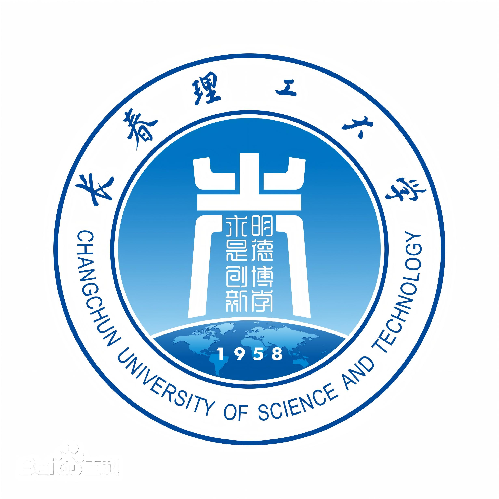
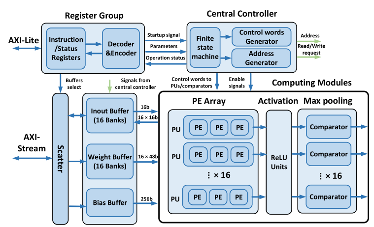
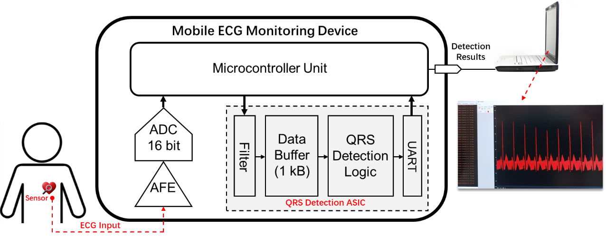
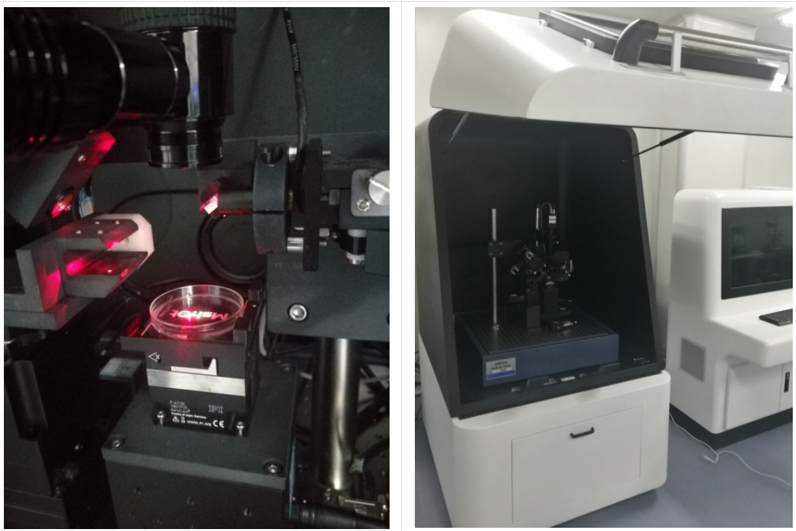
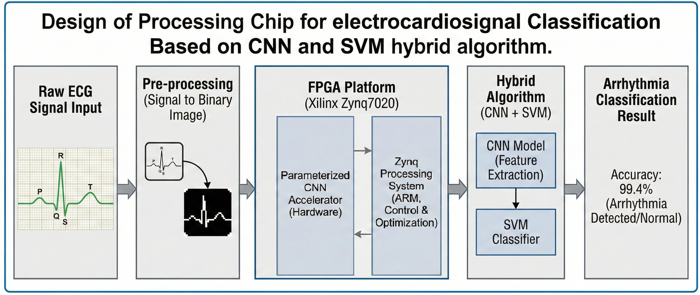
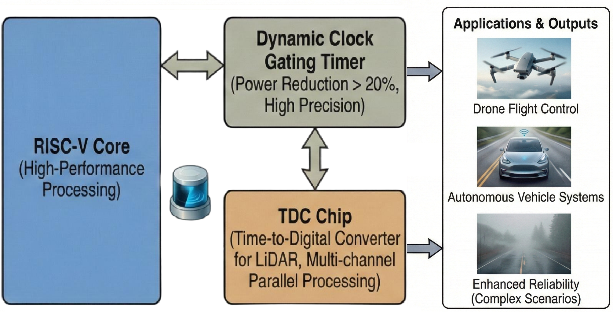

About
Experiences
Sep 2020 – Jun 2023
Master of Microelectronics and Solid State Electronics
Peking University
Peking University
Degree: Master of Microelectronics and Solid State Electronics | School of Electronic and Computer Engineering
GPA: 3.45/4.0
Research Interests: Computer Vision, Robotics, Medical Image Analysis, Signal Processing, AI Chip Design, CNN, Large Language Models (LLM)
Core Skills: AI/Software/Hardware/Control System Integration, SolidWorks, Verilog, Python, C++, FPGA
GPA: 3.45/4.0
Research Interests: Computer Vision, Robotics, Medical Image Analysis, Signal Processing, AI Chip Design, CNN, Large Language Models (LLM)
Core Skills: AI/Software/Hardware/Control System Integration, SolidWorks, Verilog, Python, C++, FPGA
Jan 2022 – Jul 2022
Intern Engineer of AI Chip Design
DJI Innovation Technology Co.
DJI Innovation Technology Co.
Developed high-performance on-board processor chips for autonomous driving and drone applications
• Designed and implemented chips supporting RISC-V architecture for seamless integration with open-source innovation ecosystem
• Advanced open-source innovation in the automotive industry, providing reliable chip solutions for autonomous driving and drone applications
• Advanced open-source innovation in the automotive industry, providing reliable chip solutions for autonomous driving and drone applications
Sep 2017 – Jun 2019
UI Programming and Robotic System Design of AFM
International Research Centre for Nano Handling and Manufacturing of China
International Research Centre for Nano Handling and Manufacturing of China
Developed user interface programming and circuit design for Atomic Force Microscope (AFM) robotic systems

Sep 2015 – Jun 2019
Bachelor of Sciences in Mechanical Electronics Engineering
Changchun University of Science and Technology
Changchun University of Science and Technology
Publications

Configurable Hardware-Efficient ECG Classification Inference Engine Based on CNN for Mobile Healthcare Applications
Microelectronics Journal

Hardware-Efficient QRS Detection ASIC Using Sparse Hilbert Transform for Mobile ECG Monitoring
Under Submission
Projects

UI Programming for the Robotic Control System of a Medical Three‑Probe Atomic Force Microscope
Designed and implemented UI programming and control algorithms for a medical three‑probe atomic force microscope robotic system, enabling precise sample manipulation and imaging.

Neural Network Algorithm Optimization for Lung Cancer CT Image and Electrocardiogram Diagnosis
Optimized neural network models for lung cancer CT imaging and ECG diagnostics, improving accuracy and computation efficiency for medical AI applications.

On-Board Processor Chip Development for Autonomous Driving and Drones (Intern at DJI)
Contributed to the design and development of high-performance onboard processors for autonomous driving and drone platforms during internship at DJI.